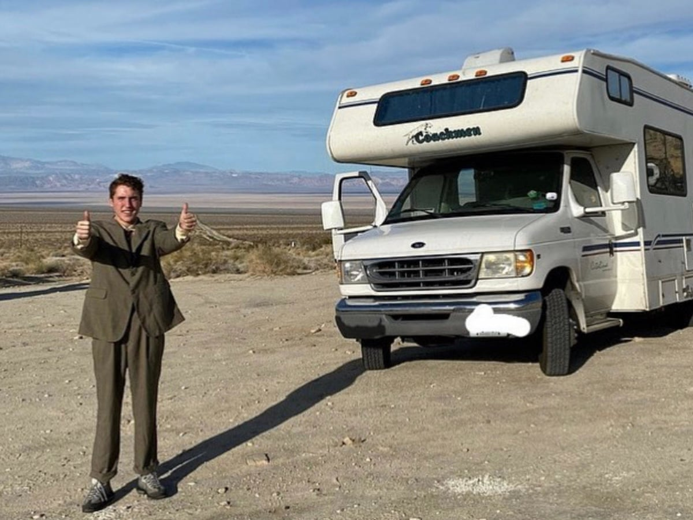

Hello World!
A place I would like to visit
Berlin
I love electronic music and am very fascinated with the techno culture in Berlin, as well as the history of the music in the city.
It is also a major hub for music technology, which I am fascinated by.
Visit Berlin

A person I admire (past or present)
Andrew Callaghan
His show All Gas No Brakes is not only incredibly funny but provides really interesting insights into the fringes in humanity.
Andrew's new Youtube Channel

Favorite Fruits
- Grapefruit
- Plum
- Nectarine
- Strawberry
- Blackberry
Favorite Presidents
- FDR
- JFK
- Obama
- Abraham Lincoln
- Lyndon B. Johnson
Celebrities I want to hang out with
- Louis Cole
- Thundercat
- Marc Rebillet
Favorite Animal
Bison